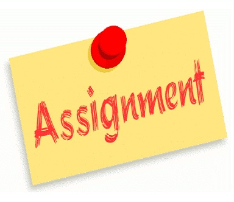

The many programming assignments completed in ICS3U
In this assignments section you will be able to find all the assignments
completed in ICS3U,
and in the future from ICS4U as well.

Assignment 1 - Peer Editing
2018-09-24
This Website was reviewed by Owen, Areeb, and Timmy, who made remarks regarding what they liked and what they thought should be improved about the website. Below each potential improvment/issue is what I have to do to either solve it, or a reason why I have not changed it yet... Owen:
The header, background and navigation bar all look very nice. I really like the three circular buttons from the home page especially the shadow effect when I hover over it. Also, I noticed the favicon on the tab bar which very creative (even though I did it first).Moreover, all links on the navigation bar are functional.
Thank you!
You have a ton of spelling errors
I will have all the text in a doccument so I can edit thigns like spelling and grammer, but for now I am more focused on formatting
Finally, you’re “About Me” page could use some more detail
That's because at this time it is not formatted, That issue should be resolved within one to two days of this peer editing assignment
Areeb:
Lots of spelling errors
I will have all the text in a doccument so I can edit thigns like spelling and grammer, but for now I am more focused on formatting
Pick a suitable image for the background
I personally like the image, but if there are more complaints in the future I will be sure to modify it
On “Assignments” page, the text is more on the right side of the page
Looks odd, try centering it
I have now added an image on the left side, which is why the text was aligned that way. There are also some more changes that will be coming to make sure that page looks good
In the “Footer” change the equal sign to a colon
Ok
Links to DECA and Robotics is really nice; overall website looks and functions awesome
Thank you!
Timmy:
At the home page, under the “Want More Cool Stuff?” section, the pictures go over the white box border and on to the side of the website. Make the images smaller.
This issue has now been fixed by putting the images in the same class as the upper three images
At the home page, space the letters out for the descriptions of the buttons.
The space between the letters has now been increaced, and I will be using a softer colour which should make the headers mroe appealing
There is grammatical and punctuation errors in the description of the website.
I will have all the text in a doccument so I can edit thigns like spelling and grammer, but for now I am more focused on formatting
In the assignments page, the text is aligned to the right. And also random 1 at the top left of the white box. Also lots of grammatical errors when describing the assignment.
Gramatical issues have been covered, and the 1. is a placholder for an image I will be adding to that section so it will be removed shortly
The about me page looks rushed. Not much detail.
That's because at this time it is not formatted, That issue should be resolved within one to two days of this peer editing assignment
In the independent project page, you probably shouldn’t say “bois”.
2018-10-10
For this assignment we were tasked with creating a game in scrach which fit a set of criteria. The game I made is called Penguin 101 where you are a little penguin and can play mini games and buy items from a shop. Below is the peer feedback I recived along with some of my responses. To play the game click the image to the left... Owen:
I really like the store (The wizard hat makes me very happy)
There are some weird border glitches, like how walking into the bear starts the fish game
That's not a glitch, it's just teaching you to respect the bear's personal space
The hat glitches around near the border
I like the spinning star after the mini games end
I really like the swimming animation in the penguin slide game but the character seems to turn at random times
Much like a real penguin it turns when it feels like it
The move faster for a further distance in the penguin slide game (feature or glitch????)
Feature
The effects sometimes glitch into the menus
Yeah that's just because they take 1 second to vanish
Areeb:
Make the tail shorter PLS
No
Walking into polar bear makes penguin fall into the water for some reason
I mean what would you do if people didn't respect your personal space?
Overall game is really well made lots of fun activities
Timmy:
When you exit the shop, the music stops
Yeah that's a feature, you can just turn it back on
In penguin dash, sometimes you go a few pixels down when going up
Yep, all part of the jump mechanics
When you touch the water near the shop, you teleport to penguin slide
Yeah you fall into the water and that's where penguin slide takes place